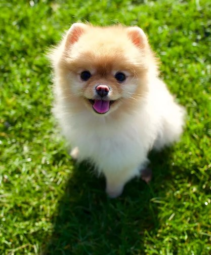
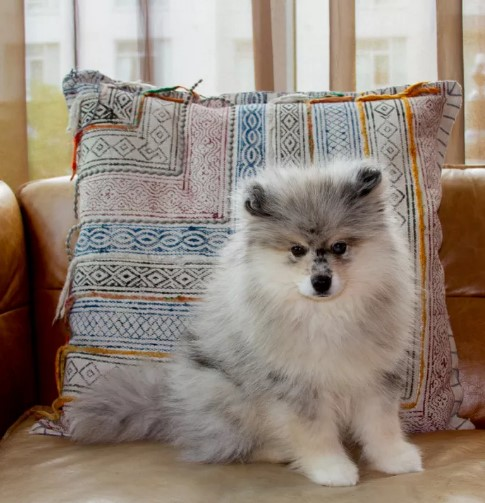

Pomeranians

Pomeranians have a reputation as lapdogs,
they were originally bred to herd animals and pull sleds.
Earlier versions of the Pomeranian breed weighed around 30 pounds.
In the 1800s, they were bred to be smaller to be kept as companions rather than working dogs.
Since then, they've only gotten smaller.
Pomeranians Overveiw
- GROUP: Toy (AKC)
- HEIGHT: Under 7 inches
- WEIGHT: Under 7 pounds
- COAT AND COLOR: Fluffy double coat; colors include black, chocolate, orange, and more
- LIFE EXPECTANCY: 12 years (teacup); up to 16 years (toy)
Pomsky

Pomsky is the cross between a Siberian husky with a Pomeranian.
Pomskies tend to vary in size depending on how much of each breed they have in them.
This mix tends to have a high energy level, so be prepared for lots of walks and play.
Pomsky Overveiw
- GROUP: Not an AKC-recognized breed
- HEIGHT: Up to 10 inches (toy)
- WEIGHT: Up to 9 pounds (toy)
- COAT AND COLOR: Fluffy, double coat; colors include white, silver, black, and more
- LIFE EXPECTANCY: 10 to 15 years
Yorkshire

Yorkshire terriers were already popular dogs at their standard small size,
so the teacup variety is a popular hit, too.
These tiny dogs can weigh just 2 to 3 pounds, but they still have big-dog personalities.
Yorkies tend to be vocal, protective, and confident.
They're also very loyal and loving to their families.
Yorkshire Overveiw
- GROUP: Toy (AKC)
- HEIGHT: Under 7 inches
- WEIGHT: Under 7 pounds
- COAT AND COLOR: Silky coat; colors include black and tan, blue and tan, and more
- LIFE EXPECTANCY: 7 to 9 years (teacup); 13 to 16 years (toy)